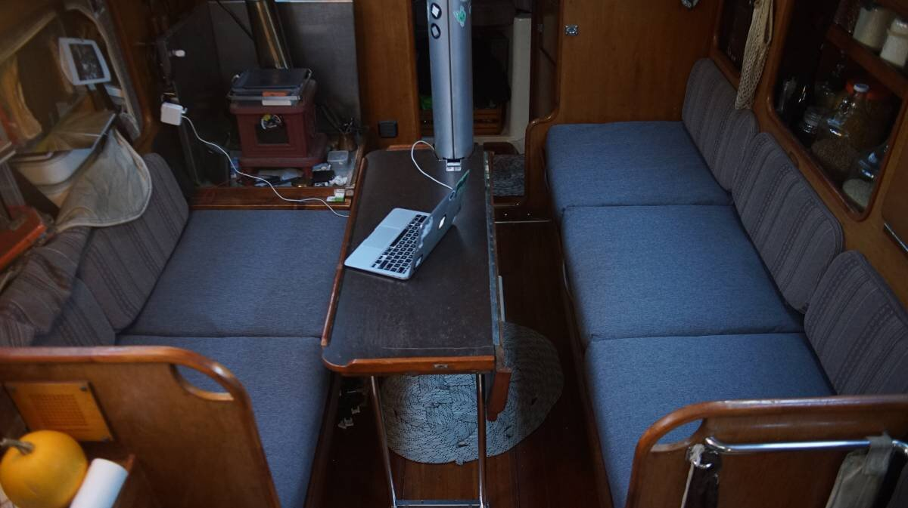

upholstery
2023.11.23
Victoria, BC, Canada.
When we first walked aboard Pino, I remember thinking that the upholstery wasn't great. We made plans to replace it, but we soon forgot about it, the plan having fallen on the lowermost rung of our evergrowing to-do list. As green sailors we were more concerned with aesthetics, but as we grew saltier we began to instead prioritize workability and durability. We thought the cushions ugly, but they were comfortable. Pino's upholstery decor would stay as it is.
The cushions in the saloon suffered the most. Time and wear leached off what little color they had left, and their once-plump foam began to compress and thin out, reaching a state of flatness we never thought was possible. We live and sleep(see bed) on the saloon cushions, ugly upholstery is not ideal but a cushion nearing the thickness of a yoga mat, much less so. The wave event of 2020 moved "new upholstery" up a few rungs when a full bottle of soybean oil leapt out of the fridge and emptied its contents on the port side cushions (yes, we've been living with these same cushions since that time, our to-do ladder is kept full).
As with all of our projects, our plan was to do everything ourselves. This year we would refresh the saloon upholstery, and the rest(quarter and v-berth) would come later. Have we ever done upholstery? No, never, but that never stops us from trying.
We began to do research on what foam, and what fabric to get...
Foam
Foam Density. A liveboard boat gets more use, which ought to be considered when choosing a foam density. Higher density foams(which have less air in them) are higher quality and last longer. Sailrite recommends using a foam with a density of 1.13kg(2.5lbs) minimum. They also recommend layering foams(glued together) with different firmness ratings, with a firmer foam at the bottom that acts as a sort of box spring, although more comfortable it does bring up the cost considerably.
Foam Thickness. What thickness to choose depends on the available space(our saloon won't allow anything thicker than 4 inches) and your personal preference. Thickness varies from 2-15cm(1-6in).
Foam Material. Commonly memory foam is made from polyurethane, but some people choose Latex(especially for bedding) because of its durability and its antimicrobial properties. Memory foam is cheap, but Latex is costly.
Fabric
Beautifully-patterned fabric matters, but so does durability, comfort, and mildew-resistance. A good resource for calculating fabric quantity, and for help making templates, is Sailrite's Fabric Calculator.
Durability
"Fabric wear rating is usually expressed in double rubs. Double rubs are found through a mechanized test called the Wyzenbeek Test. The Wyzenbeek Test is regarded as the standard of measuring abrasion resistance for fabric in North America. With this method, a piece of cotton or wire is placed on a special machine and rubbed against the fabric being tested in a back and forth motion along the warp and weft until signs of wear are present." [Source]
Anything rated above 30,000+ double rubs is considered heavy duty and ideal for living rooms or heavily trafficked areas, for boats 50,000+ double rubs is even better.
Looking at the double rub rating isn't the only important factor, there is also fiber content, how often the fabric is used, the fabric's weave, and cleaning instructions that ought to be considered.
Mildew-resistance
To avoid mildew, avoid natural fibers(cotton, cotton blends) and choose synthetics like acrylic, olefin or polyester.
Dust mite sensitivity
If sensitive to dust mites choose a cover fabric that is tightly-woven.[Source], which will keep dust mites from entering the foam. Latex does not keep dust mites out(it only keeps molds from growing inside it).
What we chose
Sometimes the most ideal choice is not what we end up with, because of cost and material availability(we always prioritize locally-available materials, whatever we can walk/cycle to):
- Royal Foam 1kg(2.0 lbs) firmness
- Polyester fabric, 50,000+ double rubs
Actually, we didn't choose these things. We went to the store with the goal to buy a few yards of fabric and a foam sheet of our choosing, but instead walked out with the idea of buying a foldable travel bed, and to tear it apart.
The store we visited makes foldable travel beds in various sizes(personal|68x188cm|27x74in, single, double, and queen), with each cushion joined up together with stitches. The foam is 10cm(4in) thick 1kg(2.0 lbs) polyurethane(not antimicrobial), pre-upholstered with polyester fabric(with zippers for each compartment). We couldn't choose the material, only the color(with 6 to pick from). The fabric is polyester, fine for our uses and rated for 50,000+ double rubs. We chose the charcoal-colored material(it's a bit light for charcoal, but oh well).
Cost of DIY'ing the cushions:
- 54x74x4 sheet of uncut foam: 359$
- 6 yards of fabric: 132$
- Polybatting: 40$
- Plus 6x50in zippers: 30$
- Total: 561$
Cost of pre-made:
- 2x 68x188cm(27x74in) travel beds(with fabric, zippers): 418$
- Polybatting: 40$
- Total: 458$
We bought two 68x188cm(27x74in) travel beds. Buying these pre-made beds(which happened to on sale) was cheaper than buying a sheet of foam, zippers and fabric separately. It meant no templates, and near-zero sewing work(!!!).

Each cushion aboard Pino is 63.5x63.5cm(25x25in), these cushions were near-perfect size. We realized that they'd occupy more width than before, but sometimes foam is over cut by up to a 1.27cm(1/2in) in order to achieve a tighter final look inside the upholstery, in our case the extra width keeps the cushions from shifting around.
We bought a roll of polybatting to layer over the top and sides of each cushion to make them more comfortable, and to round off the edges. We didn't glue the batting on, just laying it over the foam and holding it as it is inserted was enough.

As previously mentioned, this is a travel bed and all of the cushions are bound together so that they can fold up on top of one another for quick storing. We had to remove the stitching between all of the cushions, and to re-stitch a few (removing the stiches un-did one whole side of 2 cushions.

Cutting Foam. Foam stores use a foam-cutting tool that was too expensive for us to consider, others use hot knives(we don't want one). Our plan was to use a good bread knife(not an electric one), for its serrated teeth and length. See this video on how to do it. But we also learned that it's possible to use hacksaw blades(this seems like the better option) to do it.
It is difficult for us to recommend a tool because we ended up not having to cut it ourselves, but we thought we'd mention what we found during our research. We will have to cut foam someday and we'll update this bit to say what works best.
The cushions fit really well in our space and are very comfortable to sleep on! Next on our list is to buy more fabric to redo the back rests in the saloon, and eventually to redo all of the covers for all the foam aboard Pino(16 yards in all).
More updates soon...